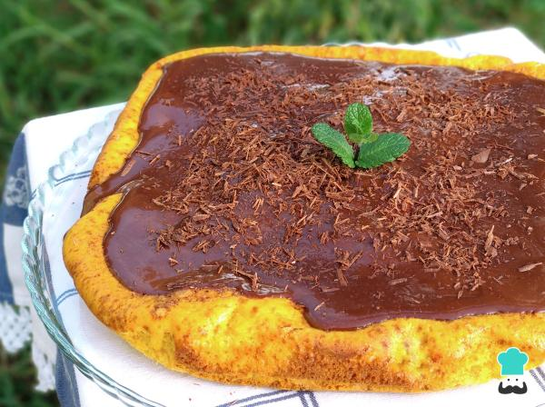

Receita de Bolo de cenoura com laranja

Quando pensamos em um bolo que agrada a todo o mundo, que é perfeito para servir em um encontro de família ou em um aniversário infantil, logo lembramos do bolo de cenoura! Por ser um bolo tão popular, existem várias receitas de bolo de cenoura e todo o mundo procura a sua favorita. No caso, quero compartilhar com vocês uma receita de bolo de cenoura com laranja - sem leite ou manteiga. Ela pode ser consumida por pessoas com intolerância à lactose (com exceção da cobertura de chocolate).
Esta é uma receita de bolo de cenoura com laranja, ou seja, um bolinho de cenoura caseiro preparado do jeito habitual, mas com suco de laranja natural no lugar no leite. A massa não fica com gosto ácido, na verdade o gosto do suco de laranja passa bem despercebido, mas ajuda a conseguir uma massa com cor amarelinha mais intensa! A cobertura de chocolate (que também pode ser preparada sem lactose) é o toque final perfeito!
Ingredientes para fazer Bolo de cenoura com laranja:
- 2 cenouras médias (200 g)
- 4 ovos
- 1½ xícaras de farinha de trigo (210 gramas)
- ½ xícara de amido de milho (maisena)
- 1½ xícaras de açúcar (240 gramas)
- 1 xícara de suco de laranja natural (200 ml)
- ½ xícara de óleo de girassol (100 ml)
- 1 colher de sopa de fermento químico
Cobertura de Chocolate
- 1 caixa de creme de leite (200 ml)
- 4 colheres de sopa de cacau em pó
- 3 colheres de sopa de açúcar
- 1 colher de sopa de manteiga
Como fazer Bolo de cenoura com laranja:
- Primeiramente peneire a farinha de trigo e o amido de milho, assim conseguiremos uma massa sem grumos de farinha.
Dica: neste momento pré-aqueça o forno nos 180ºC.
- No liquidificador coloque as cenouras descascadas e cortadas em rodelas, o açúcar, o suco de laranja e o óleo. Bata por 2-3 minutos, até obter uma mistura o mais lisinha possível.
- Coloque essa mistura do liquidificador na tigela com a farinha e a maisena e envolva delicadamente, de preferência com um fouet.
- Depois de misturar bem (mas não demasiado, para não desenvolver o glúten do trigo e assim evitar um bolo solado), acrescente o fermento químico e o bicarbonato. Mexa delicadamente uma última vez.
- Coloque o bolo de cenoura com laranja numa forma média, untada com óleo ou forrada com papel manteiga. Leve passar assar no forno (que já deverá estar quente, nos 180ºC) e deixe por 40-45 minutos ou até passar no teste do palito.
Dica: você pode assar o bolo numa forma retangular, quadrada ou redonda com furo central.
- Enquanto o bolo está assando, prepare a cobertura de chocolate. Para isso basta colocar todos os ingredientes respetivos numa panela e levar ao fogo médio-baixo até ferver, mexendo de vez em quando.
Dica: para preparar esta cobertura de chocolate sem lactose simplesmente substitua o creme de leite por creme de coco e não coloque a manteiga.
- Deixe ferver durante 5 minutos ou até reduzir na consistência do seu agrado, mexendo de vez em quando, para evitar queimar no fundo. Depois, desligue o fogo e espere amornar ou esfriar completamente.
Dica: lembre que a cobertura de chocolate ficará um pouco mais espessa após esfriar.
- Quando o bolo estiver assado, retire-o do forno, desenforme e espere esfriar. Depois, coloque a cobertura de chocolate sobre ele.
- Está pronto seu maravilhoso bolo de cenoura com suco de laranja! Sirva decorado do seu jeito e delicie-se, tenho a certeza que todo o mundo vai gostar. Bom apetite!
Veja mais receitas e dicas abaixo:
Escreva um comentário